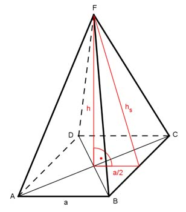

Aufgabe 190 Eine quadratische Pyramide hat eine Mantelfläche M von 434 cm² und eine Oberfläche O von 783 cm². Wie groß ist ihr Volumen V?  Oberfläche O = Grundfläche G + Mantelfläche M O = G * M |-M G = O - M G = 783 cm² - 434 cm² = 349 cm² G = a² 349 cm² = a² |√ a = 18,7 cm a * hs Mantelfläche M = 4 * --------- 2 M = 2 * a * hs |:2*a M ------- = hs 2 * a 434 cm² hs = -------------- = 11,6 cm 2 * 18,7 cm Satz von Pythagoras im roten Dreieck: hs² = h² + (a/2)² |-(a/2)² h² = hs² - (a/2)² h² = 11,6² cm² - 9,35² cm² h² = 134,56 cm² - 87,42 cm² = 47,14 cm² |√ h = 6,9 cm a² * h 18,7² cm² * 6,9 cm V = -------- = --------------------- = 804,3 cm³ 3 3